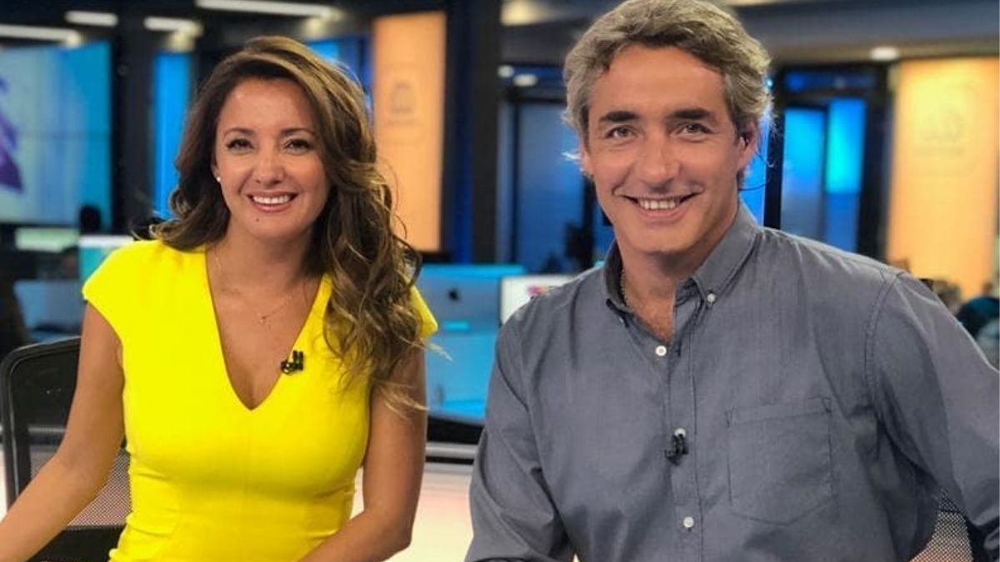

Diario "El Faro"


Este viernes el programa Aquí Somos Todos quiso celebrar a su conductora, Priscilla Vargas, por ganar el premio a reina del Copihue de Oro. Entre sus felicidades, un breve mensaje de su excompañero de Mega, José Luis Repenning, acabó logrando que Vargas rompiera en llanto.
Fue al inicio del programa que la periodista fue felicitada por sus compañeros y diferentes rostros del canal como Ángeles Araya, Francisco Saavedra, Sergio Lagos, Ramón Ulloa y más. Ahí, Vargas quiso agradecer el apoyo del canal, destacando, por ejemplo, a algunos rostros que conocía desde antes de su arribo.
“Nunca me imaginé que iba a llegar a un canal tan cariñoso. Yo quiero decir que en Mega son súper cariñosos, pero acá se pasaron”, puntualizó, a lo que luego revelaron que había un saludo que no había aparecido.
Fue en eso que quisieron mostrar en pantalla al periodista José Luis Repenning, excompañero y amigo de Priscilla Vargas, quien realizó un corto y emotivo video para celebrar a la periodista.
“Hola Pri, qué gusto tener la oportunidad de felicitarte por este reconocimiento. La reina del Copihue de Oro. Ya eras reina acá en Mega y ahora eres reina allá en Canal 13. Faltaba este reconocimiento popular, que es un reconocimiento muy importante porque es de la gente. Disfrútalo, te lo mereces con creces”, comenzó diciendo el comunicador de
“Sabemos que te va a ir muy bien junto a tu equipo de Aquí Somos Todos. Te deseamos lo mejor. Yo, particularmente, estoy seguro de que vas a seguir brillando, porque eso eres tú: una luz que brilla permanentemente. Te quiero mucho, te mando un beso enorme y felicitaciones”, cerró.
Ante el mensaje, la comunicadora, emocionada hasta las lágrimas, quiso referirse a su amigo. “Parte del Copihue de Oro es gracias a Repe, porque nosotros hicimos durante mucho tiempo un programa donde sacábamos lo mejor de cada uno”, comentó.